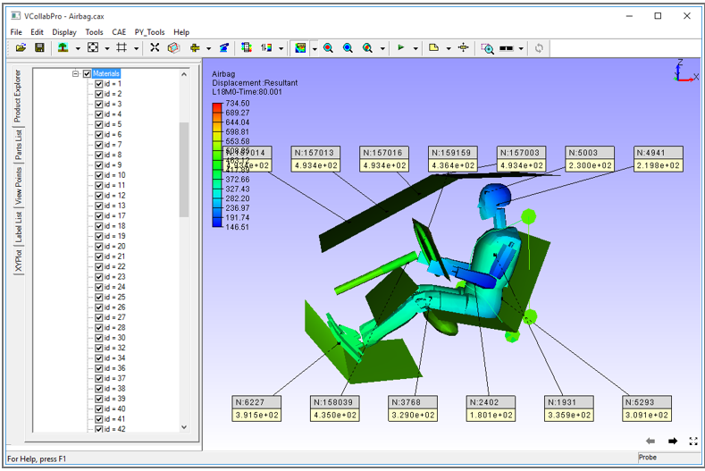

Label List
Label list panel displays the list of probe labels and user notes. Users can view, edit or delete the labels and even fit the labels inside the viewer. This tab can be accessed from the left span of VCollab Pro.
Label List Panel

Context Menu
On right clicking a node in the Label List, the context menu appears as shown below

The controls available in the Label List panel are explained in the table below.
Visible Enables or disables visibility of the selected items in the label list Probe Probes results for node id entered in ID edit box Probe List Displays list of all probed labels Notes Displays list of all user notes (annotations) Context Menu Options Invert Show Toggles in displaying between visible and hidden labels Delete Selected Labels Deletes selected labels from the panel Delete All Labels Deletes all labels Delete All Hidden Labels Deletes all hidden labels Invert Show Labels Toggles labels visibility Show Visible labels only Shows only those labels whose attached geometry position is visible. Keep Previous Labels Keeps previous labels visible. By default, they disappear.
Steps to view Label List
- Click Edit | Label List Or Open Label List tab from the left span of VCollab Pro.
- Click Probe List to view probed labels as below.
- Click Notes to view the list of notes.

Steps to add and edit Notes
To Add Note,
- Click Tools | Add Notes to open the Add Note dialog box.
- Enter a note in the edit box and click OK
- Click a point in the viewer to attach the note to it.
- Click a point on the part to which label needs to be attached.
To Edit a note,
- Open Label List panel
- Go to Notes tab in the panel.
- Double click the note to be edited. The Edit Notes dialog box with open. Edit the note with new content and click OK
- After editing, the new content is seen in the note


Steps to probe results for known IDs
- Enter a known ID in the ID edit box.
- Select a probe type from the drop down menu.
- Click Probe to probe results.
- A message box will appear for wrong node ID.
Steps to Fit labels inside viewer
There are three options to fit the labels inside the viewer,
- Fit the labels manually: This method can be used to fit the labels into the viewport, whenever it is necessary.
- Click Fit Labels option in “Tools | Labels/Notes”
- The labels are then Fit and appear in the scene (for only one time)
- Auto Fit the labels
- By default this option is unchecked. If it is checked, all labels automatically come into the scene and will not move beyond the view port.
- Arrange Labels
- If there are many labels, they overlap each other and become difficult to read
- To avoid labels overlapping, Use Arrange labels option.
- It lists half of labels above the model and other half below the model in a readable order.
The following images show labels before and after the ‘Arrange Labels’ option.
Before
After
